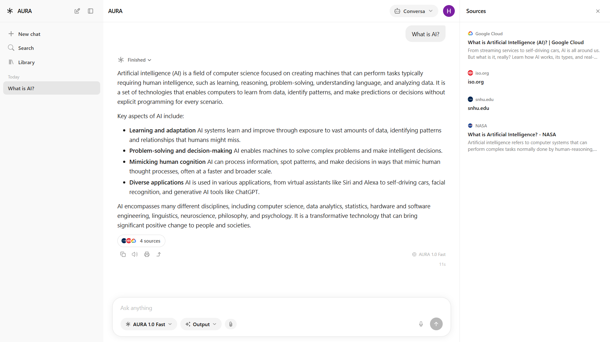
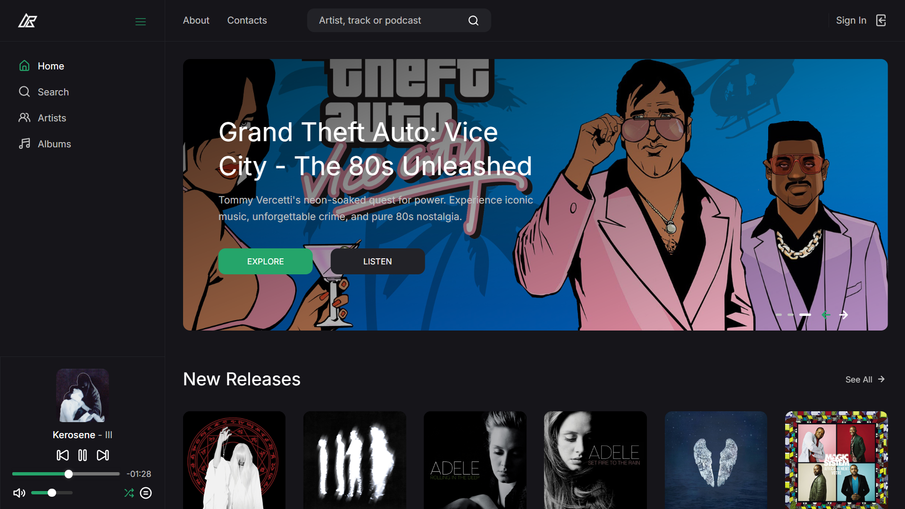
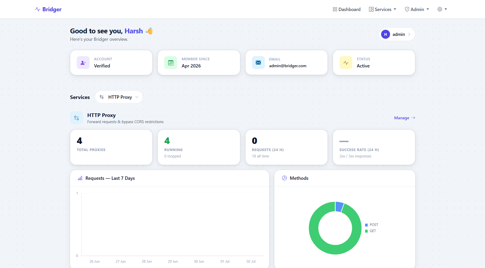

Personal Projects

AURA AI
Chatbot with Multiagent orchestration, AI-Driven Radio, AI Automation and Workflow Designer and compiler.
AI OrchestrationMultiagent

ARhythm
Personal music streaming web app, R2 Storage, Streaming HLS, CMS, Recommendation Systems.
HLS StreamingRecommendation

Fuse – By Aura
Advanced automation tool for creating workflows and integrating tools like Gmail, Sheets, Webex, and GitHub.
PythonReact.jsFlaskGemini APIOAuth 2.0WebSockets

Aura RJ
AI-driven personal radio station that curates and recommends songs dynamically per user preferences.
PythonAI DrivenRecommendation Engine
Pager
Real-time chat application featuring room-based communication, file attachments via FTP, and moderation tools.
Node.jsReact.jsSocket.ioRedisFTP

Bridger
Proxy management application built to seamlessly forward HTTP requests and bypass CORS restrictions.
Proxy ServerHTTP/CORSDashboard